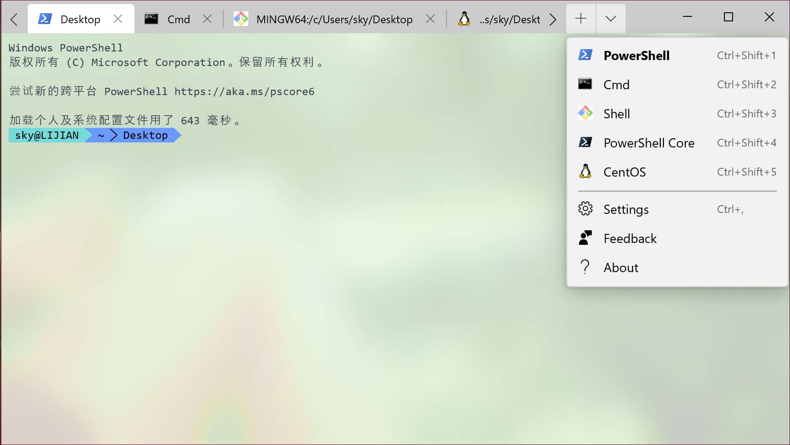
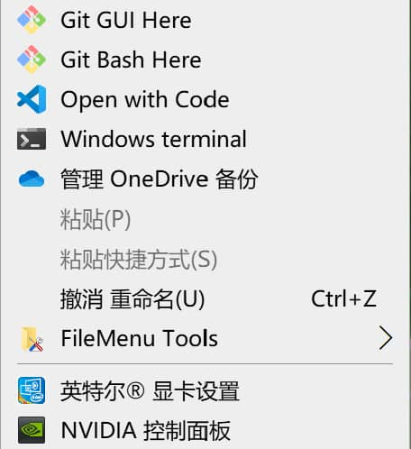
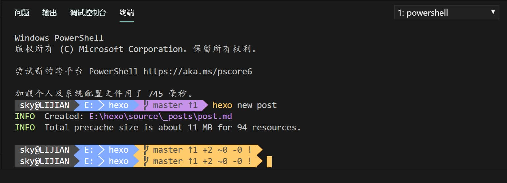

Windows Terminal是微软在Build 2019上推出了一款面向Windows10的命令行程序，这款程序集合了Windows上的PowerShell、CMD以及Windows Subsystem for Linux于一身，现已上架Microsoft Store，体验非常不错。

软件安装
Windows Terminal美化
改造PowerShell
默认的PowerShell并不美观，我的做法是在PowerShell里面加一个PowerLine，然后剩下的，在Windows Terminal中配置。
安装PowerLine的方法很简单，我们要先安装oh-my-posh，首先打开一个PowerShell，输入
Install-Module posh-git -Scope CurrentUser |
如果你使用管理员权限打开PowerShell并且想把oh-my-posh安装到所有用户，则输入
Install-Module posh-git |
这里如果让你允许什么不可信的来源，输入Y表示同意即可。
安装完成后打开~\Documents\WindowsPowerShell，新建文本文档，叫做Microsoft.PowerShell_profile.ps1（记得开拓展名显示），输入以下内容，保存。
Import-Module posh-git |
这样，在每次PoweShell打开的时候都能启用PowerLine主题。
注意：如果你的电脑里没有安装Git，在输入Import-Module posh-git会报错，解决方法是安装Git或者把这一行去掉。
PowerLine字体
可是这样，PowerShell打开的时候仍有乱码，Powerline 字体可以完美解决，下载安装使用即可。
- Powerline 字体
- 我喜欢的consolas
Windows Terminal主题修改
安装完Windows Terminal后系统默认PowerShell基本就用不到了，所以只要美化Windows Terminal即可。
首先Ctrl+，打开设置，修改相关配置，相关配置可以参考Documentation 。
主题可以自己配置
本人使用的2套主题是One Half Light ，One Half Dark，在schemes添加后在colorScheme选择即可。
// Add custom color schemes to this array |
添加Windows Terminal到鼠标右键菜单
创建图标
打开命令行，输入命令创建文件夹。
mkdir "C:\Users\[user_name]\AppData\Local\terminal" |
注意：请把[user_name]改成自己电脑的用户名。
到 terminal.ico 下载图标放入terminal文件夹。
写入注册表
创建一个.reg文件，右键菜单出现Windows Terminal有两种方法。一种是按shift+右键,另一种是直接右键。
shift+ 右键
把下面的内容复制到.reg文件内
Windows Registry Editor Version 5.00 |
注意：请把[user_name]改成自己电脑的用户名。
右键
把下面的內容复制到.reg文件内
Windows Registry Editor Version 5.00 |
注意：请把[user_name]改成自己电脑的用户名。

在Visual Studio Code中启用
"terminal.integrated.shell.windows": "C:\\WINDOWS\\System32\\WindowsPowerShell\\v1.0\\powershell.exe", |

最后呢😁